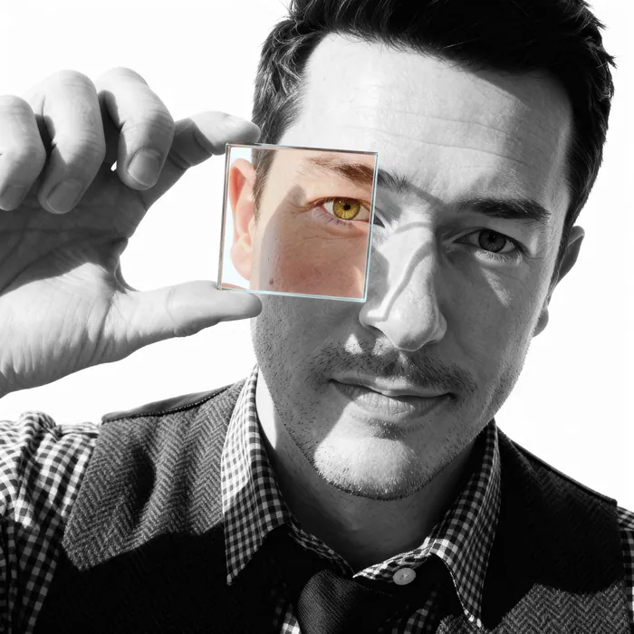

Preview unavailable. Open the high-resolution file.AI-generatedFully AI-generated
fp-ai-004
Editorial lens portrait
black-and-white studio · conceptual, precise, provocative
- Best for
- Social Feed, Website, Presentation, Layout Reference
- Avoid
- PR, Media Kit, Documentary Claim
- Format
- Editorial · 2400x2400 · Square